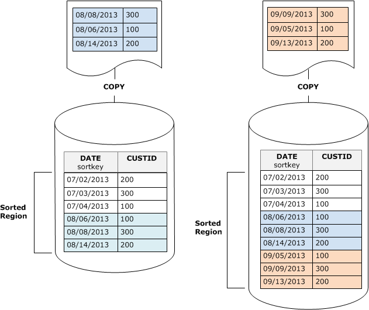

本文為英文版的機器翻譯版本，如內容有任何歧義或不一致之處，概以英文版為準。
以排序索引鍵順序載入資料
如果使用 COPY 命令以排序索引鍵順序載入您的資料，您可能會降低或甚至免除清空的需求。
當以下各項成立時，COPY 會自動新增新資料列至資料表的排序區域：
-
資料表使用複合排序索引鍵搭配僅一個排序資料欄。
-
排序資料欄為 NOT NULL。
-
資料表完全經過排序或為空白。
-
所有新資料列的排序順序高於現有資料列，包括標記進行刪除的資料列。在此執行個體中，Amazon Redshift 會使用排序索引鍵的前八個位元組來判斷排序順序。
例如，假設您有一個使用客戶 ID 和時間記錄客戶事件的資料表。如果您依客戶 ID 排序，遞增載入新增的新資料列的排序索引鍵範圍很可能會與現有範圍重疊，如先前的範例所示，導致代價高昂的清空操作。
如果您將您的排序索引鍵設為時間戳記資料欄，您的新資料列將以排序順序附加在資料表結尾，如下表所示，降低或甚至消除清空的需求。
